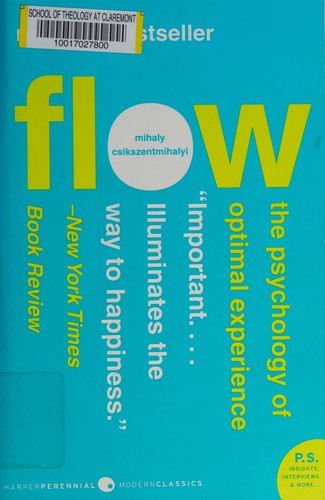
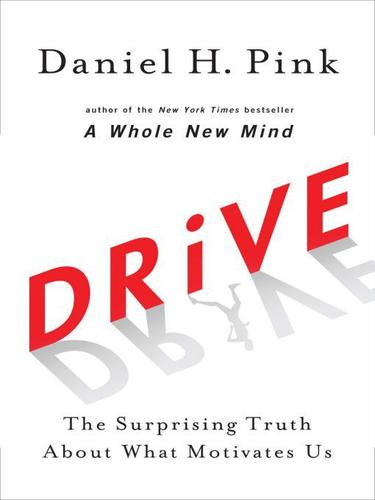

Módulo 04 / Apartado 2 de 5
Rabbit holes: de dónde salen las ideas
La materia prima del análisis no es el método, es la obsesión desordenada. El canal del flow, los tres motores de Pink, el experimento de la vela y por qué hay que cambiar de agujero antes de que el agujero te cambie a ti.
Qué es un agujero de conejo
La expresión viene de Alicia en el país de las maravillas: Alicia persigue a un conejo con prisa, se mete por su madriguera y ya no hay vuelta atrás. En inglés rabbit hole se usa para eso exactamente: empiezas por algo que parece pequeño y acabas seis horas después en un sitio que no tiene nada que ver.
Empiezas leyendo sobre un tipo de música. Acabas leyendo la historia de un instrumento, luego el movimiento cultural del que salió, luego la biografía del que lo tocaba, y cuando levantas la cabeza es de noche. Eso es un rabbit hole.
Porque el sensemaking del apartado anterior necesita materia prima. La propiedad de las «pistas extraídas» de Weick dice que montas la película con tres detalles sueltos. Pues bien: los detalles sueltos tienen que estar ya en tu cabeza cuando llegue el momento, porque en el momento no da tiempo a buscarlos.
Lo dice Recuenco de forma bastante menos elegante al cerrar la turra: mucha gente que se dedica a esto no es particularmente buena porque le falta calle y le faltan rabbit holes.
Ahora bien, la misma cosa que te alimenta te puede tragar. El agujero tiene los dos filos, y conviene mirarlos por separado.
El lado bueno tiene nombre: flow
Mihály Csíkszentmihályi (1934-2021), psicólogo húngaro-estadounidense, pasó décadas preguntándole a gente muy distinta —escaladores, cirujanos, ajedrecistas, obreros de cadena— cuándo se lo pasaban bien de verdad. Y le describían todos lo mismo: absorción total, pérdida de la noción del tiempo, desaparición de la conciencia de uno mismo. Lo llamó flow, flujo.
Su aportación no es haberle puesto nombre, es haber encontrado la condición exacta en que aparece. Y es una condición de dos variables que se dibuja siempre igual.
Lo importante del dibujo, para lo que nos ocupa, es que el aburrimiento y la ansiedad son el mismo fallo con distinto signo: un desajuste entre lo que te piden y lo que sabes. Y que la franja buena se estrecha según aprendes, no se ensancha. La gente que lleva quince años en el mismo puesto y dice que ya no le motiva nada normalmente no tiene un problema de motivación: tiene el reto en el suelo.

El libro de esto Flow: The Psychology of Optimal ExperienceEl libro donde el canal de arriba se explica entero, con las nueve condiciones del estado de flujo. Vale la pena por un matiz que se pierde en las versiones de LinkedIn: el flow no es placer, y de hecho mientras estás dentro no lo disfrutas. Lo disfrutas después. Durante, solo estás ocupado — Mihály Csíkszentmihályi · 1990
Y la otra mitad: qué es lo que te mueve
El compañero natural de Flow es Drive, de Daniel H. Pink (2009), que es el libro que popularizó los tres motores de la motivación intrínseca. Recuenco lo cita junto a Flow en la misma turra, y con razón: uno describe el estado y el otro describe las condiciones para que aparezca.
- Autonomía
- Control sobre qué haces, cuándo, cómo y con quién. No es «trabajar sin jefe»; es que las decisiones de método sean tuyas. Es lo primero que se destruye cuando una organización se pone nerviosa.
- Maestría
- El impulso de ser cada vez mejor en algo que te importa. Nunca se completa —Pink dice que la maestría es una asíntota: te acercas y no llegas—, y ese es justo el motivo de que tire tanto.
- Propósito
- Que la cosa vaya de algo más grande que tú. Es la más manoseada de las tres y la que más veces se falsifica con un póster en la pared, pero cuando falta de verdad se nota en la rotación.
Pink monta el libro sobre un experimento de 1962 que conviene conocer porque es contraintuitivo y porque se usa mal constantemente.
Karl Duncker lo diseñó en los años 30. Te dan una vela, una caja de chinchetas y cerillas. Consigna: fijar la vela a la pared de modo que la cera no gotee sobre la mesa. La solución es vaciar la caja, clavarla a la pared con las chinchetas y poner la vela dentro. Cuesta, porque ves la caja como recipiente de chinchetas y no como plataforma. A eso se le llama fijeza funcional.
Sam Glucksberg, en 1962, lo repitió ofreciendo dinero a los más rápidos. El resultado es el que hace famoso al experimento: el grupo incentivado tardó más —unos tres minutos y medio de media— que el grupo sin premio.
Y el remate: cuando presentaba las chinchetas fuera de la caja, con lo cual el problema deja de ser creativo y pasa a ser mecánico, el dinero sí funcionaba y el grupo incentivado ganaba con claridad.
Moraleja, que es de las pocas cosas realmente accionables de este módulo: el incentivo económico acelera lo mecánico y estropea lo que exige ver la caja de otra manera. Guárdala, porque el módulo 5 entero va de incentivos.

El libro de esto Drive: The Surprising Truth About What Motivates UsAutonomía, maestría y propósito, con el experimento de la vela como columna vertebral. Es divulgación y se nota, pero la distinción entre tarea algorítmica y tarea heurística —y qué tipo de incentivo va con cada una— es sólida y se usa todo el rato — Daniel H. Pink · 2009
El lado malo: cuando el agujero se te come
Recuenco no vende el rabbit hole como algo bonito. Pone en la misma turra la lista de los que se perdieron dentro: Tesla, Howard Hughes, Marie Curie, Van Gogh, Beethoven. Gente que llegó a lo más alto de su campo y a la que la obsesión se llevó la salud, la vida personal o las dos.
Y da una definición de friki que es la mejor que vas a leer y de paso es un diagnóstico:
Un friki es sencillamente una persona que ha encontrado un agujero de conejo en el que se siente a gusto y no se quiere mover de allí. Es tremendamente satisfactorio pero tremendamente limitante.
Lo llama monocultivo obsesivo, y el término es exacto: un campo sembrado de una sola cosa produce mucho y se muere entero con la primera plaga. La regla que propone no es salir del agujero —dice que todo el mundo debería tirarse por uno— sino cambiar de agujero periódicamente.
Por qué cambiar de agujero: el pensamiento liminal
Liminal viene del latín limen, umbral. Un espacio liminal es una frontera: ni dentro ni fuera, el sitio donde dos cosas se tocan. En este contexto significa que las conexiones interesantes se dan entre dominios, no dentro de uno.
Si tienes un solo agujero, cada cosa nueva que aprendes se conecta con las que ya tenías en el mismo sitio: refuerza, no ilumina. Si tienes cinco agujeros sin ninguna relación aparente, cada cosa nueva puede engancharse en cuatro sitios inesperados. Ahí está la diferencia entre saber mucho y ver lo que otros no ven.
Un aviso sobre las soluciones sin el porqué
Hay una turra estupenda sobre acertijos que remata este apartado con un ejemplo de 1984. Tir Na Nóg era un videojuego británico con una animación asombrosa para la época y un diseño de puzles muy elaborado. En España se jugaba pirateado, sin manual, con catorce años y el inglés justito. Nadie tenía ni idea de qué hacer.
Las revistas publicaban la solución: ve a tal sitio, coge la margarita, abre la puerta, coge el caldero. Todos los pasos correctos. Y ni una sola línea sobre por qué. Ni por qué ahí, ni por qué la margarita. Lo demoledor es que el juego sí dejaba pistas de todo eso repartidas: la solución publicada las ignoraba enteras.
Esto es el mismo problema que las best practices de consultoría. Te dan los pasos que le funcionaron a otro, sin las condiciones que hacían que funcionaran. Aplicados a un sitio distinto no fallan porque estén mal: fallan porque nunca fueron una solución, eran un recorrido. Un curso que te dé pasos sin porqués te está vendiendo la revista, no el juego.
Y por eso este módulo empieza por el sensemaking y sigue por los agujeros de conejo, antes de llegar a ninguna metodología. Las metodologías vienen en el módulo 5 y son la parte fácil.
Fuentes de este apartado
Las turras de las que sale
La turra entera de este apartado. Define el rabbit hole, mete Flow y Drive como el lado bueno, la lista de obsesos ilustres como el lado malo, y cierra con la regla del cambio periódico de agujero y su definición de friki. Es de la saga de sensemaking, y el remate conecta las dos cosas.
La obsesión con los acertijos, enigmas, puzzles y misteriosTurra · 45 tweets · abr 2022La de Tir Na Nóg y las soluciones sin porqué. Empieza confesando que su cabeza se pone de mal humor cuando una explicación es perezosa y no cierra bien, y de ahí se va a por qué una solución que no explica sus razones no sirve para nada. Es una turra personal y una de las mejores.
Los libros
El canal reto/habilidad y las nueve condiciones del estado de flujo, sacadas de miles de entrevistas con gente de oficios muy distintos. Recuenco lo cita como el ejemplo del rabbit hole bien canalizado. Ojo con las versiones resumidas: casi todas se saltan que el flow no se disfruta mientras dura.
Drive: The Surprising Truth About What Motivates UsDaniel H. Pink · 2009Autonomía, maestría, propósito. Y el problema de la vela de Duncker con el experimento de Glucksberg de 1962, que es el argumento más citado contra los bonus para trabajo creativo. Es el puente natural hacia el módulo 5, donde los incentivos son el tema entero.
 The Great Mental ModelsShane Parrish · 2019
The Great Mental ModelsShane Parrish · 2019Aquí como complemento del pensamiento liminal, no como canon. Es un catálogo de modelos prestados de otras disciplinas —física, biología, economía— para usarlos fuera de su campo. Es exactamente la mecánica de las rayas de puntos del dibujo, sistematizada. Se lee a saltos.